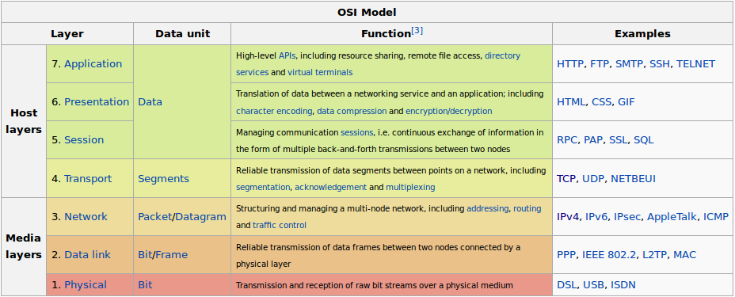
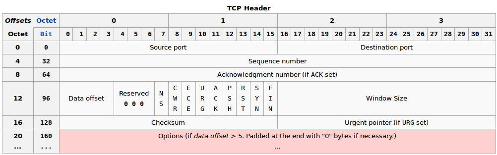

Lantap Workshop
Frack
Jan Klopper / Lammert Hellinga
De Lantap
Monteren/Solderen
Netwerken
OSI Model
Open Systems Interconnection Model

IPv4
TCP

TCP Handshake

TCPDump
- Tcpdump || sudo apt-get install tcpdump
- man tcpdump
- sudo tcpdump -n
-
- Root access nodig om rauwe packets uit te mogen lezen
- 16:34:57.267226 IP 192.168.1.101.21271 > 218.248.255.163.53: 23380+ PTR? 6.36.194.173.in-addr.arpa. (43)
- Datum + tijd
- Protocol
- Source address
- Source port
- Destination address
- Destination port
- Packet information
Tcpdump verbose + filtering
- sudo tcpdump -v -n
- sudo tcpdump -vv -n
- sudo tcpdump -D
- List de interfaces
- sudo tcpdump -i eth0 (filter op device)
- sudo tcpdump -n tcp (filter op protocol)
- sudo tcpdump -n 'src 192.168.1.101' (filter op source address)
- sudo tcpdump -n 'udp and dst port 53' (filter op udp and dest port 53 (dns))
Grep
- man grep
- grep -i (search case insensitive)
- sudo tcpdump -n -A | grep -e 'POST'
tcpdump port http or port ftp or port smtp or port imap or port pop3 -l -A | egrep -i 'pass=|pwd=|log=|login=|user=|username=|pw=|passw=|passwd=|password=| pass:|user:|username:|password:|login:|pass |user ' --color=auto --line-buffered -B20 (search for passwords)
Wireshark
- Wireshark.org
- sudo apt-get install wireshark
- sudo wireshark
- https://www.youtube.com/watch?v=y-4UQSXkqig
Links